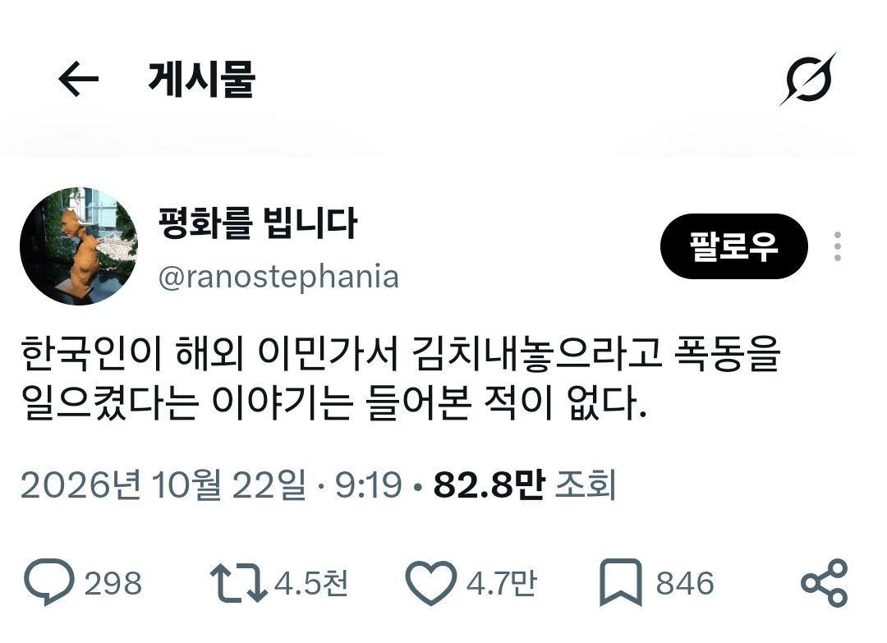

이슬람이 시발이네

이슬람이 시발이네
지랄이 그래서 정확히 뭔데
할랄급식 요구한거 생각할수록 존나 웃기네
니자식 도시락 니가 싸서 처먹여 병신년아
병신이 지가 할랄 푸드 만들면 될걸 ㅋㅋㅋ 쳐하지도못함 병신이맞음ㅋㅋ
ㄹㅇㅋㅋ
쉐복은 오져 ㅋㅋㅋ 무지성 혐오 해야지 인생이 좀 나아지는가봐
개슬람들은 로마에왔으면 로마법을따라 습박
씹슬람은 뭐든 다 해줘 아니면 알라후 아크야르 씨밤쾅 두가지뿐임
+ 깨바아압~!
역지자지
한국인은 김치를 싸간다고
폭동을 왜일으켜
시베리아로 쫓겨나도 당근으로 김치해먹는게 한민족임
근데 남 강제로 김치맥이고 김장안오면 명예살인하지는않잖에 이게 ㅅㅂ 비유를 졷같이하고있어개슬람새끼들이랑
그치 필요하면 만들어야지 왜 요구해 병신들이
없으면 해먹지 왜 시위를 함
ㅁㅋㅋㅋ 맞네 ㅋㅋㅋ 진짜 양심없는 호로새끼들이 종족단위로 있노
내놓으라고 한적은 없지만 알고있냐고 계속물어본적은 있다.
중동가서 여긴 김치속재료로 쓸 젓갈을 안파네요ㅜㅜ 지랄한적있냐고
이슬람새기들수준